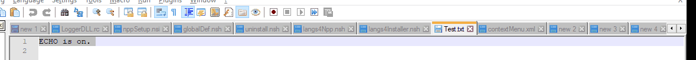
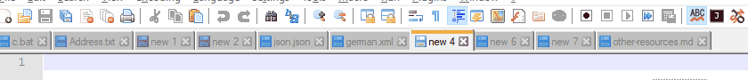
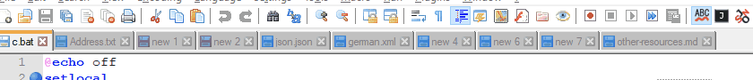
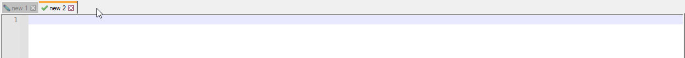
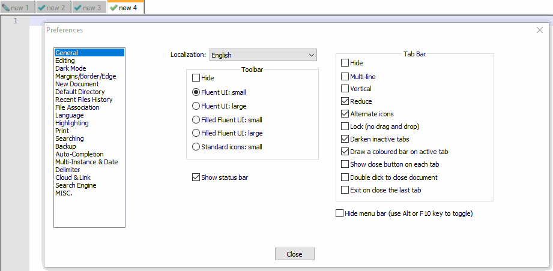
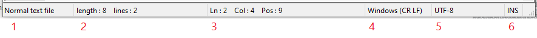
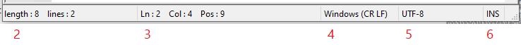

Tabs
The keyboard shortcuts described in this section are the default Settings > Shortcut Mapper settings; if the Shortcut Mapper has been modified, the keystrokes may be different.
The MOUSEWHEEL commands described require that the mouse pointer be hovered over the Tab Bar.
If the description says it will “wrap”, it means that if you try to go beyond the last tab, it will next go to the first tab; and if you try to go before the first tab, it will next go to the last tab. If the descriptions says it does “not wrap”, then trying to go beyond the last tab or before the first tab will just stay at the last or first tab without wrapping.
-
The tab bar settings can be found at Settings > Preferences > General > Tab Bar, including the options to Hide the tab bar or to Lock the tab bar (so that tabs will not be movable from the Tab Bar, though they can still be reordered using keyboard shortcuts or menus).
-
If you click on a tab on the tab bar, that tab will become the active tab in the view.
-
If you hover over a tab on the tab bar, there will be hover text:
- It will show the full file path for a file from the filesystem.
- If it’s a new, unsaved tab, then the hover text will be the name of that tab (defaults to
new #, depending on language, but you can rename unsaved tabs even without having saved it to a true filename, and the hover will show the same text as seen in the tab’s title). Starting in v8.7.1, the hover text will also show the date-and-time when the new tab was created. - Hovering over an inactive tab may reveal the hollow pin icon (see the “to pin a tab” description, below) or the close icon (see “to close a tab” description, below).
- If Settings > Preferences > General > Tab Bar > ☐ Darken inactive tabs is checked, hovering over an inactive tab will highlight that tab, as described in User Interface > Tabs.
-
To switch between first and last tab, use Ctrl + Shift +
MOUSEWHEELon tabs.MOUSEWHEELup will take to first tab while down will take to last tab.
-
To switch and activate next/previous tab, there are multiple options:
- Use Ctrl +
MOUSEWHEELon tabs.MOUSEWHEELup will take to previous tab while down will take next tab. This method will wrap around. - Use Ctrl + Page Up for next tab and Ctrl + Page Down for previous tab. This method will wrap as well.
- Use Ctrl + Tab for next tab and Ctrl + Shift + Tab for previous tab. Using use Ctrl + Tab or Ctrl + Shift + Tab while MRU is enabled provides great user experience. To enable MRU you can follow
Settings->Preferences->MISC.->Document Switcher, then checkmark bothEnableandEnable MRU Behavior.
- Use Ctrl +
-
To move tab from one position to other position:
- Use Shift +
MOUSEWHEELon tabs.MOUSEWHEELup will move currently selected tab to previous position while down will move to next position. This will wrap.- If the Tab Bar is locked (using Tab Bar > Lock preferences), then Shift +
MOUSEWHEELwill just activate the next or previous tab (without wrapping).
- If the Tab Bar is locked (using Tab Bar > Lock preferences), then Shift +
- Use Ctrl + Shift + Page Up for previous position and Ctrl + Shift + Page Down for next position. This will not wrap.
- This will move the tab order even if the Tab Bar is locked.

- This will move the tab order even if the Tab Bar is locked.
- Use Shift +
-
If there are more tabs than are visible on the Tab Bar, you can scroll the Tab Bar, to be able to see more
- Use
MOUSEWHELLto scroll: “up” will scroll so you can see earlier Tabs in the list, “down” will scroll so you can see later Tabs in the list. - There will also be ⏴⏵ arrow buttons: ⏴ will scroll so you can see earlier Tabs in the list, ⏵ will scroll so you can see later Tabs in the list. (For a normal horizontal Tab Bar, the arrow buttons will be on the right of the Tab Bar; for a vertical Tab Bar, they will be at the bottom of the Tab Bar.)
- Use
-
To move a tab from one View to the other, you can use the techniques described in the Editing > Dual View section or Views > Move / Clone section, including:
- Use the menus: View > Move/Clone Current Document > Move to Other View.
- Right Click on the tab’s title and select Move to Other View.
- Drag the tab’s title into the editing pane for that same tab and select Move to Other View.
- If the other View is already visible, drag the tab’s title into the editing pane of the other View, and it will move.

-
To clone a tab from one View into the other, you can use the techniques described in the Editing > Clone Document or Views > Move / Clone section section, including:
- Use the menus: View > Move/Clone Current Document > Clone to Other View.
- Right Click on the tab’s title and select Clone to Other View.
- Drag the tab’s title into the editing pane for that same tab and select Clone to Other View.

-
To create a new file tab using the tab bar:
- If there is empty area to the right of the last tab in the tab bar, double click there and a new tab will be created.

- If there is empty area to the right of the last tab in the tab bar, double click there and a new tab will be created.
-
To close a tab using the tab bar:
- If Settings > Preferences > General > Tab Bar > ☐ Show close button on each tab is checked, you can click the red ☒ on that tab to close that tab.
- When set to show, the close button will always be visible on the active tab
- When set to show, in v8.7.2 and newer, the close button will be invisible on inactive tabs, though if you hover over the inactive tab, its
- If Settings > Preferences > General > Tab Bar > ☐ Double click to close document is checked, you can double-click the tab’s title to close that tab.

- You can middle-click on the tab’s title to close that tab.
- If Settings > Preferences > General > Tab Bar > ☐ Show close button on each tab is checked, you can click the red ☒ on that tab to close that tab.
-
To pin a tab using the tab bar:
- Ensure Settings > Preferences > General > Tab Bar > ☐ Enable pin tab feature is checkmarked.
- The active tab (and any tabs you hover over) will have a hollow “pin” icon.
- Clicking that icon will “pin” the tab, which will change the icon to a filled-in “pin”, and will move the tab to the left side of the tab bar (before any unpinned tabs, but after any tabs that are already pinned).
- Pinned tabs will show the filled-in pin icon whether or not they are active.
- Clicking the filled-in pin icon will unpin the tab.
Tab Bar Right Click Menu
When you right click on the title for a tab, you get a context menu for manipulating that tab.
Close: Closes this file’s tab.Close Multiple Tabs >:Close All BUT This: Closes all files, except this tab’s file.Close All BUT Pinned: Closes all files, except any pinned tab’s files.Close All to the Left: Closes all files that are to the right of this file on the tab bar.Close All to the Right: Closes all files that are to the left of this file on the tab bar.Close All Unchanged: Closes all files that do not have unsaved changes (leaves only files that have unsaved changes).
PinorUnpin: Pins or unpins the active tab, if Settings > Preferences > General > Tab Bar > ☐ Enable pin tab feature is checkmarked. (New in v8.7.3)Save: Saves the file (disabled/grayed out if there are no unsaved changes).Save As: Allows you to save the current file under a new name.Open Into >:Open Containing Folder in Explorer: Opens this file’s folder in the Windows Explorer.Open Containing Folder in cmd: Opens this file’s folder in thecmdcommand prompt.Open Containing Folder as Workspace: Opens this file’s folder as a Folder as Workspace.Open in Default Viewer: Opens this file in the default Windows, using the same rules as the File > Open in Default Viewer menu action.
Rename: Renames this file.Move to Recycle Bin: Deletes the current file (placing it safely in Window’s Recycle Bin).Reload: Reloads this file from disk.Print: Prints this file.Read-Only: Sets this file’s Notepad++-specific read-only flag (see more in the Edit menu description).Clear Read-Only Flag: Clears this file’s read-only flag for the Windows OS (see more in the Edit menu description).Copy to Clipboard >Copy Full File Path: Copies the full file path (drive, directory, and filename) to the Windows Clipboard.Copy Filename: Copies just the filename (no drive or directory) to the Windows Clipboard.Copy Current Dir. Path: Copies the file’s directory (drive and directory, but not the filename) to the Windows Clipboard.
Move Document >Move to Start: Moves the tab to be the first in the list of active tabs for the current view. (New to v8.6.1.)Move to End: Moves the tab to be the last in the list of active tabs for the current view. (New to v8.6.1.)Move to Other View: Moves the tab from one view to the other.Clone to Other View: Makes a tab for the same file in the other view.Move to New Instance: Moves the tab from this Notepad++ instance to a newly-created instance (only works on named files that have no unsaved changes).Open in New Instance: Makes a tab in a new Notepad++ instance which contains the same file as this tab (only works on named files that have no unsaved changes).
Apply Color to Tab >(new to v8.4.6)Apply Color #: Applies the indicated color to the highlight portion of the tab bar. (Applying a different color will change the color, not combine the colors together. Each tab can only have one color.)Remove Color: Removes the color of the tab, returning to the default color scheme.- Starting in v8.7, these colors can be user-defined using the Style Configurator > Global Styles > Tab color n and Tab color dark mode n background color settings.
Menu Bar
The menu bar of Notepad++ has a variety of menus, including File (for generic file operations like open and close), Edit, Search, and View, Encoding (which affects how the bytes of the file are interpreted as text – whether ANSI or UTF-8 or similar), Language (for syntax highlighting), Settings, Tools (with a couple of built-in utilities), Macro, Run (for running external commands), Plugins, and the Window menu (for accessing open files already open in Notepad++).
It also contains the ? menu, which is a Help-style menu, including actions that list the command line arguments; actions that take you to the Notepad++ home page, the project page, this user manual, and the Community Forum; actions for the updater and proxy; the Debug Info (which is critical information when asking for help at the Community Forum or when creating a feature request or bug report at the project page) and About.
At the far right of the menu bar there are also icons + (to create a New file), ▼ (to choose from the open files), and X (which closes the active tab). (Before v8.4.3, only the X existed in that area of the menu bar. Starting in v8.4.5, these can be made hidden using Settings > Preferences > General > Menu.)
Toolbar
There is a toolbar which has icons for various common tasks, which each run a specific menu action. If you hover your mouse over that icon, it will show its name. The toolbar actions include:
- New ⇒ File > New: Creates a new file.
- Open ⇒ File > Open: Opens an existing file.
- Save ⇒ File > Save: Saves the active file.
- Save All ⇒ File > Save All: Saves all active files.
- Close ⇒ File > Close: Closes the active file.
- Close All ⇒ File > Close ALl: Closes all open files.
- Print ⇒ File > Print: Launch the Print dialog.
- Cut ⇒ Edit > Cut: Cuts the selected text or line to the clipboard.
- Copy ⇒ Edit > Copy: Copies the selected text or line to the clipboard.
- Paste ⇒ Edit > Paste: Pastes the clipboard contents.
- Undo ⇒ Edit > Undo: Reverts the text to its content before the previous operation.
- Redo ⇒ Edit > Redo: Re-applies that action that was just reverted due to an Undo.
- Find ⇒ Search > Find: Launches the Find dialog.
- Replace ⇒ Search > Replace: Launches the Replace dialog.
- Zoom In ⇒ View > Zoom > Zoom In: Temporarily enlarge the visible rendering of the text (does not change anything in the file).
- Zoom Out ⇒View > Zoom > Zoom In: Temporarily shrink the visible rendering of the text (does not change anything in the file).
- Synchronize Vertical Scrolling ⇒ View > Synchronize Vertical Scrolling: Toggle locking of the two views together, vertically.
- Synchronize Horizontal Scrolling ⇒ View > Synchronize Horizontal Scrolling: Toggle locking of the two views together, horizontally.
- Word Wrap ⇒ View > Word Wrap: Toggle whether or not long lines will be wrapped in the display.
- Show All Characters ⇒ View > Show Symbol > Show All Characters: Toggle showing all special characters.
- Starting in v8.6.9, there is a drop-down menu available from this toolbar icon. Clicking the button will still toggle from showing all to showing none. But if you click the drop-down instead (or right click anywhere on the icon), you will see the full View > Show Symbol submenu, from which you can manually select which special characters to show and which not to.
- Show Indent Guide ⇒ View > Show Symbol > Show All Characters: Toggle dotted vertical line
⸽showing tabstops. - Define Your Language ⇒ Language > User Defined Language > Define Your Language: Toggles dialog to define a User Defined Language (“UDL”).
- Document Map ⇒ View > Document Map: Toggles display of the Document Map panel.
- Document List ⇒ View > Document List: Toggles display of the Document List panel.
- Function List ⇒ View > Function List: Toggles display of the Function List panel.
- Folder as Workspace ⇒ View > Folder as Workspace: Toggles display of the Folder as Workspace panel.
- Monitoring (tail -f) ⇒ View > Monitoring (tail -f): Toggles the Live File Monitoring feature, which updates the file as its changed by another external process.
- Start Recording ⇒ Macro > Start Recording: Starts recording actions in Notepad++ as a macro.
- Stop Recording ⇒ Macro > Stop Recording: Stops recording actions in Notepad++ as a macro.
- Playback ⇒ Macro > Playback: Plays back a recorded macro.
- Run a Macro Multiple Times… ⇒ Macro > Run a Macro Multiple Times…: Plays back a recorded macro multiple times.
- Save Current Recorded Macro… ⇒ Macro > Save Current Recorded Macro…: Saves a recorded macro to a named slot in the Macro menu.
Plugins can put additional buttons on the toolbar, to perform actions provided by those plugins.
The toolbar settings can be found at Settings > Preferences > General > Toolbar, including the option to Hide the toolbar. And you can customize the icons used for those buttons, as described in Toolbar Icon Customization.
Tools Menu
This menu contains commands related to running cryptographic hash functions , including MD5, SHA-1, and the SHA-256 and SHA-512 algorithms from SHA-2. (SHA-1 and SHA-512 were added in v8.5.5.) These are useful for comparing the hashes for downloaded files to officially-published hashes, and for generating those hashes for files that you are publishing.
For each function, there are 3 commands:
- Generate - You can enter text in the upper field, and it will give you the hash output in the other field. You can copy those results to the Clipboard through the button. You can optionally checkmark ☑ Treat each line as a separate string to get N different hashes for N different strings at the same time, rather than a single hash that covers the entire input text.
- Generate from Files - Will calculate the hashes for one or more selected files.
- Generate from Selection into Clipboard - Will use the text that is currently selected, calculate the hash, and put the hash results in the Clipboard.
Document Switcher
The Document Switcher feature (which can be enabled or disabled using the Settings > Preferences > MISC > Document Switcher settings) can be used to quickly switch between all the open files.
When you hold the Ctrl key and then press and release the Tab key, the Document Switcher appears as a popup with a yellow background, showing the current list of tabs (or a partial list, if there are too many tabs); the popup will remain until you release the Ctrl key. One tab in the list will be shown in bold, indicating which tab will be made activate when all keys have been released. With the Document Switcher on screen, repeated press and release of the Tab key will move the bold indicator downward on the screen, to the next tab name in the list. When the desired tab is bold, release all keys to activate that tab.
The first tab to be shown in bold when you start the Document Switcher depends on the Settings > Preferences > MISC > Document Switcher > Enable MRU behavior checkbox: When not checkmarked, the first tab name in bold will be the tab to the right of the currently-active tab (or the first tab in the tab bar, if the currently-active tab is the last in the tab bar; or the first tab in the other View, if the currently-active tab is the last in the active View); in this mode, the order of the tabs in the Document Switcher is the same as the order of the tabs in the tab bar, with the files from the active View above those from the alternate View when both Views are active. When that setting is checkmarked, the first tab name in bold will be the tab that was active just before the current tab was activated (the “most recently used” tab); in this mode, the order of the tabs in the Document Switcher is the “most recently used” order, with the most recent at the top of the list, and the least recent at the bottom, with the tabs from both Views mixed together in usage order regardless of which View they are from.
When cycling through the tabs in the Document Switcher, if the bottom entry in the list is reached and you again press and release Tab, the bold indicator will move to the top of the list; or, if the list was too long to entirely be displayed, the Tab will scroll the Document Switcher, so the bold indicator will move to next entry down, and the entry that was previous at the top of the list will scroll out of the visible popup.
If you hold down Shift (while still holding the Ctrl key to keep you in Document Switcher mode), and then press and release the Tab, it will cause the bold indicator to move to the previous entry in the tab list, rather than the next.
The Document Switcher functionality can also be achieved using just the mouse (if you have a scroll wheel): Right-click in the editing area for a tab and hold the right mouse button, then begin scrolling the mouse wheel (in either direction) to display the Document Switcher popup; further scrolling of the scroll wheel will change which tab is shown in bold in the list. Releasing the right mouse button will cause the tab that is currently bold to be activated. An alternate way to activate a tab using the mouse, while the right mouse button is still held and the Document Switcher is displayed, is to left-click on one of the tab names from the list, which will immediately make that entry bold, activate the tab, and close the popup (even though you haven’t let go of the right mouse button yet).
Some users have wondered about a “yellow flash” they have seen when using Notepad++: If you Ctrl+Tab and then promptly release both keys, it will immediately switch to the tab that is first made bold and will leave Document Switcher mode (since you released the Ctrl key). Depending on how promptly you release, this may just briefly flash the yellow-background popup, not giving you a chance to read the popup’s list of tabs.
Scrolling in Panels
Many of the panels have the ability to scroll: the graphical scrollbars can be dragged for fine control of scrolling, or click in the “empty” area of the scrollbar to scroll a screenfull at a time. (With some OS versions, the scrollbars may require that you move the mouse over the scrollbar area before the scrollbar is obvious.)
For most panels with scrolling ability, if the panel is active, then the MOUSEWHEEL can be used to scroll in the vertical direction (MOUSEWHEEL Up scrolls toward the beginning of the document, MOUSEWHEEL Down toward the end); or, if there is a horizontal scrollbar but no vertical scrollbar, it can scroll horizontally instead. (Most panels do not have an equivalent mouse control for scrolling horizontally; though if your mouse has a second scroll wheel, that might work, depending on how your mouse’s driver works.)
For the editor View(s), the vertical scrollbar and MOUSEWHEEL scrolling are active when there are enough lines of text to occupy more than one screen (or even when fewer lines, if Settings > Preferences > Editing 1 > ☑ Enable scrolling beyond last line is checkmarked). The horizontal scrollbar is visible when View > Word wrap is on and there is enough text on a line to go beyond the physical width of the View; if it’s visible, then Shift + MOUSEWHEEL Down will horizontally scroll toward the end of the line, and Shift + MOUSEWHEEL Up will horizontally scroll toward the beginning of the line (and a mouse with a second wheel may also be able to scroll the editor View horizontally, depending on how your mouse’s driver works).
Status Bar
If you have not hidden the Status Bar using the Settings > Preferences > General > Status Bar > ☑ Hide checkbox, then the bottom of the Notepad++ window will contain a status bar.
If the Notepad++ window is wide enough, it will contain six sections, as seen in this screenshot:

If the Notepad++ window is too narrow, the first section will be missing, as seen here:

- Document Type: shows what type of file is being edited.
- It will be the full name of the Language shown as active in the Language menu. For example, if Language > XML is active, the Document Type field will show
eXtensible Markup Language file. - If the Language is a UDL, the name of the UDL will be prefixed by
User Defined language file -to make it obvious that it’s a UDL, not a built-in language. - This field will not be visible if the Notepad++ window is too narrow.
- Double-clicking or right-clicking this field will bring up a copy of the Language menu.
- It will be the full name of the Language shown as active in the Language menu. For example, if Language > XML is active, the Document Type field will show
- Document Size: Shows the length of the file (in bytes, not characters, since in many encodings, some characters take more than one byte to encode) and the number of lines in the file.
- Double-clicking this field will bring up the View > Summary dialog.
- Current Position of the caret:
Ln : ℕ: Indicates the caret is on Lineℕ. (Line 1 is the start of the document).Col : ℕ: Indicates the caret is on Columnℕof the current Line. (Column 1 indicates the caret is at the start of the line.)Pos : ℕ: When there is no active selection, this sub-field indicates which byte of the file the caret is on. (1 indicates the caret is before the first byte in the document. In many encodings, some or all characters may take up multiple bytes; there is more discussion on bytes-vs-characters in the description of the Go to… command.)Sel : ℕ | ℒ: When there is an active stream selection,ℕshows how many characters (not bytes) are in the stream selection, andℒshows how many lines are included in the stream selection.Sel ℙ : ℕ | ℒ: When there is an active mutli-editing selection,ℙshows how many separate selection segments make up the multi-selection;ℕshows how many characters (not bytes) are in the multi-selection (throughout all the segments); andℒshows how many lines are included in the multi-selection.Sel : ℒxℕ -> ℙ: When there is an active column-mode selection,ℒshows the number of lines in the column-mode selection (the height of the rectangle),ℕshows the number of characters across (the width of the rectangle), andℙshows the total number of characters in the column-mode selection.- Double-clicking this field will bring up the Search menu’s Go to… dialog.
- Note: The
ℕ,ℒ, andℙin these descriptions are placeholders for numbers, not meant to indicate the literal value seen. For example, it doesn’t literally sayLn : ℕ– it will sayLn : 5if it’s on line 5, orLn : 7if it’s on line 7.
- End-of-File Format: Shows whether the active document is using
Windows (CR LF)line endings (\r\n),Unix (LF)line endings (\n), orMac (CR)line endings (\r, for ancient pre-OSX Mac-format files).- Double-clicking or right-clicking this field will bring up the Edit menu’s EOL Conversion sub-menu.
- File Encoding: Shows the file encoding or character set.
- Double-clicking or right-clicking this field will bring up the Encoding menu.
- Typing Mode: Shows which typing mode is active – insert (
INS) or overwrite (OVR).- Left-Clicking this field will toggle the value.
System Tray
When the Settings > Preferences > MISC are set to Minimize to system tray, then when you minimize Notepad++, the main Notepad++ window will be closed, and the Notepad++ icon will move from the Windows taskbar to the Windows system tray. If those settings have Close to system tray (available starting in v8.7.1), then when you close Notepad++, it will move to the system tray. When that preference is set to Minimize / Close to system tray (new to v8.7.2), either minimizing or closing Notepad++ will move the application to the Windows system tray. You can also launch Notepad++ directly to the system tray using the -systemtray command-line argument.
When on the system tray, Notepad++ will not show up in the Windows Alt+Tab list of applications to switch between, nor will it show up in the main Task Manager’s main Applications list; however, it will still show up tine Task Manager’s Details list, which shows all the executable files running.
If you left-click on the Notepad++ system tray icon, it will activate the Notepad++ application: the main Notepad++ window will be shown again, and the icon will move from the system tray back to the taskbar.
If you right-click on the Notepad++ system tray icon, it will show a context menu:
Activate: Shows main Notepad++ window.New: Shows main Notepad++ with a new file tab created.New and Paste: Shows main Notepad++ with a new file tab created, and it will paste the current contents of the clipboard into that new tab.Open...: Shows main Notepad++ window, and immediately calls File > Open so that you can open a file right away.Find in Files: Shows the Find in Files dialog, and allows you to run a search and/or replace action without showing the main Notepad++ window.- If you run a search, the Search Results window or panel would be populated:
- If the Search Results had been previously docked as a panel in Notepad++ (the default state for Search Results), then the next time you activate Notepad++, the Search Results panel will be visible with the results you obtained.
- If the Search Results had been previously undocked and in a separate window from Notepad++, then the undocked Search Results window will usually become visible at this point, even though the main Notepad++ window is not visible. You can use the normal Search Results navigation: so double-clicking on a result will activate Notepad++, showing the result you chose in the active Notepad++ view.
- If you ran a replace action, those replacements will have occurred, even though the Notepad++ window is not visible and no results are shown.
- If you run a search, the Search Results window or panel would be populated:
Close Tray Icon: Completely closes/exits Notepad++, and icon will be removed from the System Tray